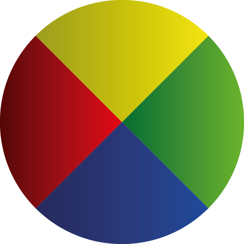

Bienvendo. esta es un pagina de colores. en la cual no solo podras ver la gran cantidad de colores que hay, si no saber un poco mas acerca de lo que son los colores, diferentes formas de mezclarlos y hasta sus codigos para que quiera utilizarlos en tus diseños.

En nuestra pagina vas a poder apreder un poco sobre la composicion de colores, como estan compuestos y que colores existen.

Tambien vas a descubrir los distintos tipos de colores como los frios y calidos, entre otros.

Encontraras que cada color tiene un efecto diferente a otros en el cerebro, o como estos puden ayudar a dar una sensacion en especifica.

Y por ultimo apreder un poco de lo que es la UI del color que se esta utilizando mucho ultimamente en el mundo del diseño digital.